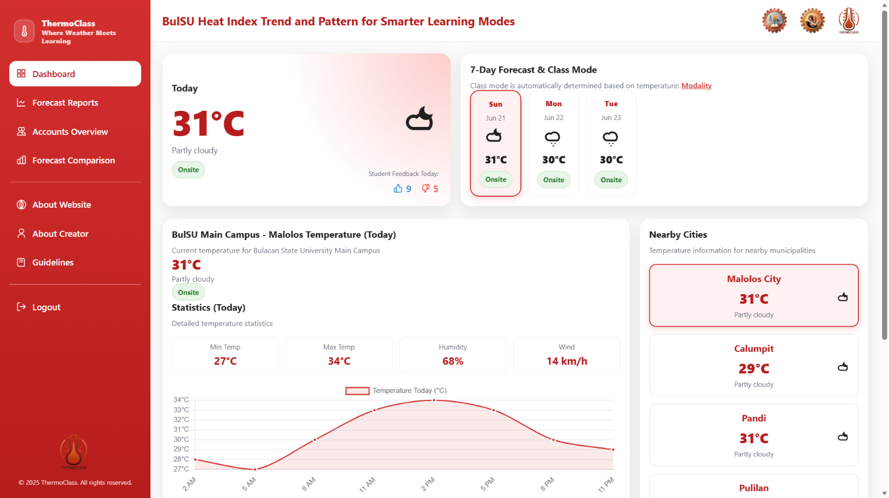
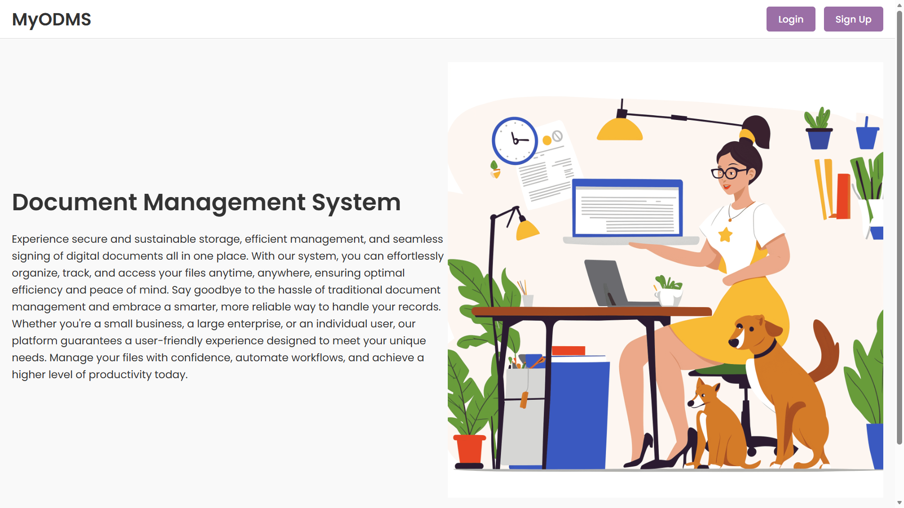
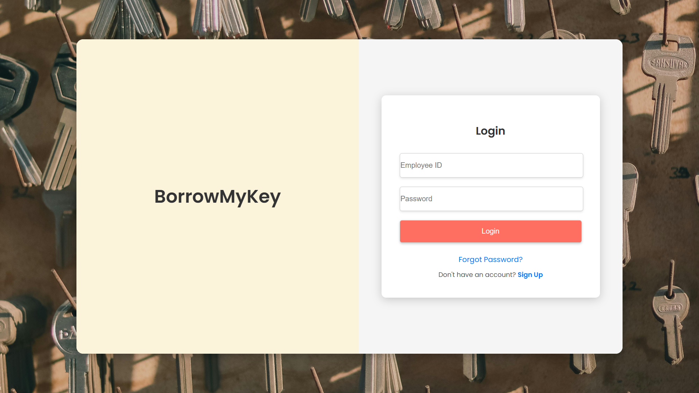

Hello, I'm
Roche Mae B. Bagolboc
Turning data into insights and ideas into digital solutions through analytics, web development, and design.

Turning data into insights and ideas into digital solutions through analytics, web development, and design.
My journey in Information Technology was unexpected. Before entering college, I initially dreamed of becoming a Civil Engineer. However, as I progressed through my studies, I discovered a growing interest in technology, data, and problem-solving. This experience taught me the value of adaptability, continuous learning, and embracing opportunities outside my original plans.
Through dedication and perseverance, I graduated Cum Laude with a Bachelor of Science in Information Technology major in Business Analytics from Bulacan State University. Along the way, I gained experience in Salesforce CRM, data analytics, database management, reporting, and web-based system development through internships, academic projects, and professional roles.
Today, I enjoy building solutions that combine technology, data, and business processes to improve efficiency and support better decision-making. I am eager to contribute my analytical mindset, technical skills, and willingness to learn to organizations seeking innovative and data-driven solutions.
Transforming raw data into meaningful insights through data cleaning, visualization, forecasting, and reporting.
Developing responsive and secure web applications using modern technologies and database-driven solutions.
Designing, organizing, and maintaining databases while ensuring data accuracy, integrity, and accessibility.
Creating intuitive and user-friendly interfaces focused on usability, accessibility, and better user experiences.
A combination of technical expertise and professional competencies developed through academic projects, Salesforce training, customer service experience, and real-world business applications.
Developed through data analytics projects, research studies, and Salesforce training where I analyzed information, identified patterns, and generated insights to support decision-making.
Strengthened through developing systems such as ThermoClass, Online Document Management System, and Key Borrowing System, where I transformed real-world challenges into practical digital solutions.
Built through managing databases, processing voter records, validating information, and ensuring data accuracy across multiple systems and reports.
Developed through customer service roles, stakeholder interactions, and presenting project outputs in academic and professional environments.
Demonstrated by successfully transitioning across customer service, administrative support, Salesforce CRM, analytics, and web development while continuously learning new technologies.
Enhanced through academic projects, capstone development, internship activities, and workplace experiences that required effective coordination and teamwork.
Developed through balancing academic responsibilities, internship requirements, project deadlines, and work commitments while maintaining quality results.
Strengthened through maintaining records, organizing databases, managing project documentation, and creating structured workflows that improve efficiency.
Graduated as Cum Laude with a specialization in Business Analytics. Developed competencies in data analytics, database management, web development, business intelligence, and user-centered system design.
Graduated with Honors while developing analytical, research, and problem-solving skills through STEM-based learning and academic activities.
Completed Junior High School while developing strong communication, teamwork, and leadership skills.
Graduated as Salutatorian and consistently demonstrated academic excellence, discipline, and leadership.

A predictive analytics system developed for Bulacan State University that forecasts campus heat index conditions up to seven days in advance using ensemble learning techniques. The system analyzes weather data patterns and recommends appropriate classroom learning modalities such as face-to-face, hybrid, or online classes to support student safety and academic continuity.
View Project
A role-based web application designed to securely store, organize, and manage digital documents. The system includes user authentication, file uploads, document sharing, and administrative controls to improve document accessibility and workflow efficiency.
View Project
A web-based key management system that monitors key issuance and returns while maintaining borrower records and room information. The application enables administrators to track borrowing activities efficiently and reduce the risk of misplaced or unreturned keys.
View ProjectProfessional certifications and training programs that enhanced my knowledge in Salesforce administration, cybersecurity, networking, and intellectual property fundamentals.
Completed a 420-hour training program focused on Salesforce administration, CRM concepts, data management, reports, dashboards, and business process automation.
Jan 2026 – Apr 2026 View CertificateCompleted a self-paced course covering intellectual property, copyrights, trademarks, and patents through the Intellectual Property Office of the Philippines.
December 2024 View CertificateGained foundational knowledge of networking concepts, network communications, protocols, and internet technologies.
February 2023 View CertificateLearned cybersecurity fundamentals including threat analysis, network defense, and security administration concepts.
September 2025 View CertificateDeveloped knowledge of cyber threat management, vulnerability assessment, risk management, and incident response principles.
October 2025 View CertificateOpen to opportunities in Business Analytics, Data Analytics, Web Development, and UI/UX Design. Feel free to reach out.
Bulacan, Philippines
Thank you for visiting my portfolio. I look forward to connecting with you.